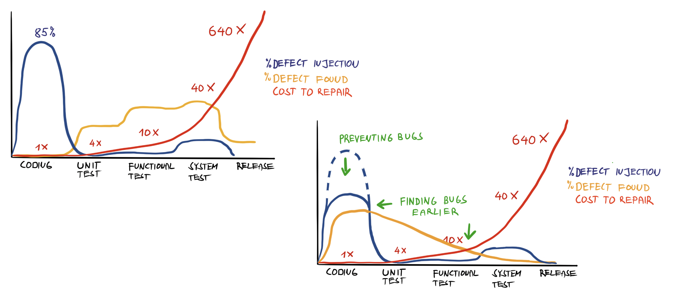

Testing
Testing fundamentals, Levels of testing, JUnitDependency Management
Introduction to Software Testing
What is Testing
- Testing aims to determine the degree of alignment between reality and expectations.
- It helps measure quality but cannot directly influence it.
- It provides information to stakeholders.
- It is an ongoing activity, not a development phase.
- It is the responsibility of the entire team, not an isolated role.
-
The goal of testing is to:
- Verify that the product does what is expected of it.
- Provide information.
- Identify problems, not just bugs.
- Reduce risks.
- The goal of testing is not to make decisions but to provide information to support decision-making (the tester is not the decision-maker).
What is Quality
What is quality, and how does it relate to testing and the product?
Is a product considered good quality if it contains no errors?
A product is something someone desires because it satisfies their needs.
We can view the quality of a product from two perspectives:
What the product does = external quality.
or
How it does it = internal quality.
External and Internal Quality
- Does the product fulfill user's needs?
- Does it operate in a way that is usable for the user?
- Is the software well written?
- Is the code readable and understandable?
- Is the code designed well?
- Is the code testable? Is the test coverage sufficient?
- Is there sufficient documentation?
- Is there sufficient logging?
While it is possible for product with relatively low internal quality to have high external quality, it is not surprising, that the two usually correlate. When software is testable, it is easier to extend and maintain, requiring both less skill and time, making it more resistant to regression.
Regression == in terms of testing, regression is a defect unintentionally introduced by a change into a previously working part of software.
7 principles of testing
- Testing shows the presence of defects, not their absence
- Exhaustive testing is not possible
- Early testing saves time and money
- Defect have a tendency to cluster
- The Pesticide Paradox
- Testing is context dependent
- Absence-of-errors fallacy
The Testing Pyramid

The Cost of Defects
Types of testing
Types of testing
Testing based on the internal knowledge of the systemThere are two types of testing based on the testers knowledge of the system internal structure/design/implementation.
-
Blackbox Testing
Internal structure of the system is not known to the tester. -
Whitebox Testing
Internal structure of the system is known to the tester. -
Greybox Testing
Sometimes, this term is used when the internal structure of the system is partially known to the tester.
Types of testing
Testing based on code execution- The tested system code is executed during testing
-
Dynamic testing can further be divided into
- Functional
- Non-functional
- Code is not executed during testing
- Static analysis usually involves the use of tools
- Code review
- Document reviews - specifications, requirement lists, tests, etc
- Best practices
Functional vs. Non-Functional Testing
We can also distinguish between functional and non-functional testing.
Functional testing
is testing of the functionality of the system, meaning testing of functions of the system as a real user would use it.
During functional testing, system functions and features are exercised by providing appropriate inputs and verifying that the outputs are as expected.
Non-functional testing
is testing of the non-functional aspects of the system.
Some examples of non-functional testing include:
Performance, Security, Usability, Interoperability, Compatibility, Compliance, etc.
Test Case
What is a Test Case
Test condition
is a testable aspect of a component or system identified as a basis for testing.
In other words, some behavior we expect from the system.
Test case
is a sequence of pre-conditions, inputs, actions steps with expected results and post-conditions, developed based on test conditions.
In other words, test case = a scenario describing how to test a particular test condition.
Test Case
Test ID: 1234
Title: User is blocked after 3 failed login attempts
Pre-Conditios:
User test.user@harbourspace.com exists and is not blocked.
Test Steps:
| # | Step | Expected Result |
| 1. | Open the login page | Login page is shown |
| 2. | Enter the username test.user@harbourspace.com and password invalid | User is not logged in, is informed of invalid credentials. Password field is nullified. |
| 3. | Enter the password invalid again | User is not logged in, is informed of invalid credentials. Password field is nullified. |
| 4. | Enter the password invalid again | User is not logged in, is informed that their account was locked. |
Expected Result:
User is not logged in and their account is locked.
Test design techniques
Test design techniques
What are they and why should developers care?
Test design techniques are techniques used to design tests.
They are used to ensure adequate test coverage, optimize the number of tests, maximize the effectiveness of tests and manage risks.
Test coverage
is a measure of the degree to which the source code of a program has been tested.
It is usually expressed as a percentage of code that has been executed by the test suite.
Different metrics are used to measure test coverage, such as function coverage, statement coverage, branch coverage, etc.
Remember that exhaustive testing is impossible!
Equivalence Partitioning
Equivalence partitioning is a technique used to reduce the number of test cases by dividing the input data of a software unit into partitions of equivalent data from which test cases can be derived.
In this example, there are 4 partitions of equivalent data. In theory, any test case from a partition should yield the same result.
For example these sets of values belong to the same partitions:
-275.0, -1.0, 10.0, 100.1
-280.0, -100.0, 99.0, 101.0
Boundary Value Analysis
Boundary value analysis is a software testing technique similar to equivalence partitioning, but the tests are designed to look program behavior at boundary values.
There are 3 boundary values in this example: -273.15, 0.0 and 100.0
Equivalence partitioning and boundary value analysis are often used together.
Decision Tables
Decision table testing is a testing technique in which test cases are designed to execute the combinations of inputs and/or stimuli (causes) shown in a decision table.
| Conditions | Test 1 | Test 2 | Test 3 | Test 4 |
| User exists | YES | YES | NO | YES |
| Password correct | YES | NO | - | YES |
| User blocked | NO | NO | NO | YES |
| Actions | Test 1 | Test 2 | Test 3 | Test 4 |
| Allow access | YES | NO | NO | NO |
| Block user | NO | YES | - | - |
State Transition Analysis
State transition testing is a testing technique in which outputs are triggered by changes to the input conditions or changes to state of the system.
Orthogonal array testing
Othogonal array testing statistical method of test design aimed to test interactions of multiple variables, their combinations and interactions, while minimizing the number of test cases.
Example:
Assume we have a system that takes 3 parameters: color, shape and size, each parameter has 2 values.
To test all possible combinations of these parameters, we would need 8 test cases.
With orthogonal array testing, we can achieve the same coverage with only 4 test cases.
| Color | Shape | Size | |
| Test 1 | red | square | small |
| Test 2 | red | circle | large |
| Test 3 | green | square | large |
| Test 4 | green | circle | small |
This is an orthogonal array of 2 factors with 2 levels each - L4(2^3).
All-Pairs Testing
All-pairs testing is a combinatorial software testing method that, for each pair of input parameters to a system (typically, a software algorithm), tests all possible discrete combinations of those parameters.It is based on the observation that most faults are caused by interactions of at most two factors.
This testing technique is rarely implemented "by hand", but usually with the help of specialized tools.
There are techniques that extend all-pairs testing to more than two factors, such as all-tuples testing, but these techniques are not widely used, because they generate very large number of test cases with insignificant added benefit.
Unit Testing
Unit Testing
The purpose of unit testing is to verify individual units of the code base work as intended by the author. It is an essential tool in maintaining internal quality of a software.
Unit
is the smallest testable parts of the software, such as individual method, function or objects.
Another important role of unit testing is documentation. By writing unit tests, we document the behavior we intended, so that when we, or someone else wants to make changes in the software, they will understand how the software was supposed to work.
Assertion
Assertion is a term used form mechanism of verifying if test expected outcomes match actual outcomes.
Assertion itself is usually a function (method) that we call in our tests which evaluates actual value with expected value.
Based on result of this evaluation, the assertion ends in one of two states:
PASSED or FAILED
- Test may contain any number of assertions, anywhere within the test.
- When a test is run, and no assertion fails, the test is marked as passed.
- When a test is run, and any assertion fails, the test is marked as failed.
-
Generally, when assertion fails, test is ended immediately.
Any code following the assertion is not executed.
Test Driven Development
You may encounter the term Test Driven Development (TDD). Know that, although the term suggest it might be testing technique, it really is not. Rather it is a software design technique.
- In TDD, you write a tests first, they will initially be failing.
- Then you start implement the functionality.
- When all the tests finally pass, your implementation is complete.
The reason TDD is development technique and not a test technique is because by writing tests first, you are making code testable by design. Well-testable code usually directly correlates with code quality and therefore overall software quality.
Integration Testing
Integration Testing
Integration testing is a level of software testing, which aims to test the integration of different units or components of the system.
Integration testing can be ...
- Integration of different modules, classes, or services within the software.
-
Testing of the integration of other systems, such as ...
- Operating System functions and services
- Database, file systems, data sources
- External services, APIs, message queues, cloud services
Integration tests are typically more costly to run than unit tests, because they require more resources and are usually slower. They may also be less reliable.
On the other hand, they provide more information about the system as a whole, and may uncover problems that are not visible at the unit level.
JUnit
JUnit
JUnit of the most commonly used testing frameworks for Java.Unit testing framework is a set of tools that provides features to:
- Write test cases
- Executed test cases
- Evaluate test results
There are other of unit testing frameworks available in Java. The concepts that we will learn with JUnit generally apply to all unit testing frameworks.
JUnit Test
- JUnit test, generally, is a class that contains one or more test methods.
- Each test method is a method annotated with
@Testannotation. -
Besides being annotated with
@Testannotation, in order for a method considered a test, it must contain at least one assertion. - By convention, test classes are usually suffixed with
Test -
While program sources are plces in
/src/main/javadirectory, test sources are conventionally placed in/src/test/javadirectory. - It is important, that the test code is as readable as possible. Therefore, good naming conventions are essential.
JUnit Test
JUnit tests are just regular Java classes, where methods annotated with @Test
are treated little different from regular methods by the testing framework.
Assertions are just regular method calls, where the testing framework evaluates the result of the assertion.
In JUnit, we can use Assertions class to make assertions.
TemperatureConverterTest.java
// By convention the name of the test class should be the name of the class under test + "Test"
public class TemperatureConverterTest {
@Test // this annotation marks the method as a test method
public void testConvertCelsiusToFahrenheit() {
Assertions.assertEquals(32.0, TemperatureConverter.toFahrenheit(0.0));
}
@Test
public void testConvertFahrenheitToCelsius() {
Assertions.assertEquals(0.0, TemperatureConverter.toCelsius(32.0));
}
}
Clean tests <=> clean code
Writing testable code matters!
I can say through my own experience, that the more testable the code unit is, the better it usually is.
This is because testability is an indicator of good design and therefore indicator of internal quality.
Writing clean tests matters!
During real-world development, you will often be dealing with code you didn't write yourself.
You will come to appreciate well written tests, because they will help you understand the code you are working with.
Same goes also in the other direction, your colleagues will appreciate good tests you write, because they will help them understand your code.
Good tests
Writing reliable and maintainable testsThe value of tests is that they give us feedback during development. There are few rules that help us make sure that the feedback we get from tests is accurate and reliable.
Test should be:
- Deterministic - each test run should yield the same result.
- Easy to understand - this will help with interpreting results and maintenance.
- Fast - we want fast feedback loop.
- Independent - each test should be able to run in isolation and in any order.
- Repeatable - each test should be able to run multiple times.
- Focused - each test should focus on testing one thing only.
Descriptive tests
One of the ways you can make your test code easier to understand is using descriptive names and well-designed assertions.
With JUnit, we can use @DisplayName annotation to give our tests descriptive name.
Notice that the test names express state of the SUT, but also what we expect from the SUT.
TemperatureConverterTest.java
public class TemperatureConverterTest {
@Test
@DisplayName("should convert Celsius to Fahrenheit - 0C = 32F")
public void testConvertCelsiusToFahrenheit() {
Assertions.assertEquals(32.0, TemperatureConverter.toFahrenheit(0.0));
}
@Test
@DisplayName("should convert Fahrenheit to Celsius - 32F = 0C")
public void testConvertFahrenheitToCelsius() {
Assertions.assertEquals(0.0, TemperatureConverter.toCelsius(32.0));
}
}
Descriptive assertions
Another important aspect of testing is understanding test results.
To make understanding test results easier, we can use Assertions class methods in a way that when they fail, the output is as descriptive of the problem as possible.
For example, these two assertions would both work, the first one provides much clearer information when it fails.
Example 1
@Test
public void testConvertCelsiusToFahrenheit() {
Assertions.assertEquals(32.1, TemperatureConverter.toFahrenheit(0.0));
}
Expected :32.1
Actual :32.0
Example 2
@Test
public void testConvertCelsiusToFahrenheit() {
Assertions.assertTrue(32.1 == TemperatureConverter.toFahrenheit(0.0));
}
Expected :true
Actual :false
Test Lifecycle
Test lifecycle is the sequence of events that happen during the execution of a test.
Several annotations can be used to control the test lifecycle.
These annotations are:
@BeforeAll, @BeforeEach, @AfterEach and @AfterAll.
When JUnit test case is started:
- JUnit Test class gets loaded and scanned for
@Testannotation marking individual test cases @BeforeAll- is run before all@Testmethods@BeforeEach- is run before each@Testmethods@AfterEach- is run after each@Testmethods@AfterAll- is run after all@Testmethods
Note that @Test methods may run in any order, or may run in parallel.
JUnit Test Lifecycle
TemperatureConverterTest.java
public class LifecycleTest {
@BeforeAll
public static void setUp() {
System.out.println("This runs once before all tests");
}
@BeforeEach
public void beforeEach() {
System.out.println("This runs before each test");
}
@AfterAll
public static void tearDown() {
System.out.println("This runs once after all tests");
}
@AfterEach
public void afterEach() {
System.out.println("This runs after each test");
}
@Test
public void test1() {
System.out.println("Test 1");
}
@Test
public void test2() {
System.out.println("Test 2");
}
}
Logging
Logging
Logging is an important aspect of software quality. It allows us to monitor the behavior of the software while it is running in real world conditions, and to diagnose possible problems.
Several login frameworks are available in Java, such as Log4j, Logback and java.common.logging.
TemperatureConverter.java
public class TemperatureConverter {
private static final Logger logger = LoggerFactory.getLogger(TemperatureConverter.class);
public static Double toCelsius(Double fahrenheit) {
logger.info("Converting " + fahrenheit + " Fahrenheit to Celsius");
return (fahrenheit - 32) * 5 / 9;
}
public static Double toFahrenheit(Double celsius) {
logger.info("Converting " + celsius + " Celsius to Fahrenheit");
return celsius * 9 / 5 + 32;
}
}
Debugging
Debugging
Debugging is the process of finding and resolving defects or problems within a computer program that prevent correct operation of computer software or a system.It is an essential skill of any software developer.
Usually, an IDE (such as IntelliJ IDEA) will have a debugger built in, which will allow you to step through your code, inspect variables and evaluate expressions to see what the program is doing, while it is executing
Documentation
Java Documentation
Another important aspect of software quality is documentation.
In Java, we can use a tool called Javadoc to generate documentation from our code.
TemperatureConverter.java
public class TemperatureConverter {
/**
* Converts temperature value given in Fahrenheit to Celsius
*
* @param fahrenheit temperature value in Fahrenheit
* @return temperature value in Celsius
* @see Fahrenheit
* @see Celsius
*/
public static Double toCelsius(Double fahrenheit) {
return (fahrenheit - 32) * 5 / 9;
}
}

For details, see Javadoc Tool
Dependency Management
Dependency Management in Java
Java (JDK) comes with a set of libraries that allow us to do some basic development tasks. However, Java programmes often require more.
As with any modern language, you can extend your code by using libraries, in Java, they are called dependencies.
You could manage your dependencies manually, by adding their jar files to the project. Or you can use a tool to help you do that.
There are two major tools for project and dependency management:
Dependency Management in Java
Besides managing dependencies, these tools also take care of setting up your project, modules, plugins and more.
- Java version management
-
Dependency and version management (in scope)
- development, test, runtime
- Project structure
-
Task configurations
- build, publishing, testing
- documentation, code generation, data migrations
-
Plugins
- developer tools, code quality, ...
Our project is using Gradle.